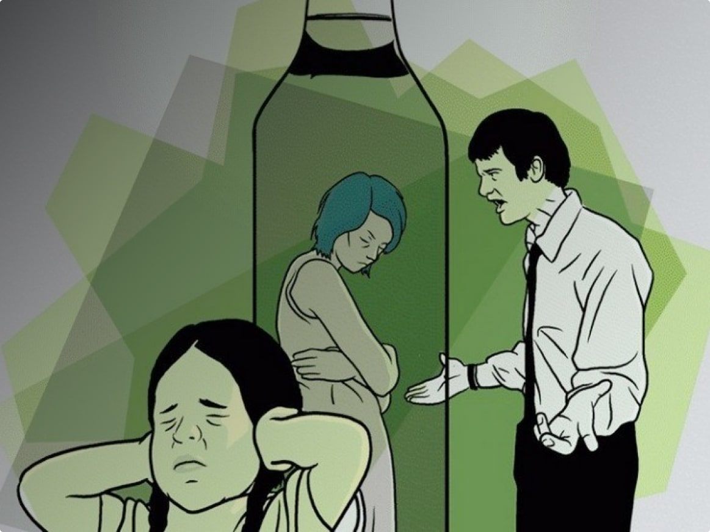

Содержание статьи:
Созависимость в отношениях с алкоголиком — это серьёзная проблема, поскольку жизнь, действия, мысли полностью определяются тем, выпил ли человек из вашего окружения сегодня. Такое психологическое состояние не следует игнорировать и пускать на самотёк. Если чувствуете, что эмоциональный настрой на низком уровне, обращайтесь за консультацией в клинику ««Время Решений»» и мы подберём эффективные методы лечения вашей созависимости.
Постепенно, совершенно незаметно настроение и поведение начинают определяться тем, как прошёл день у больного родственника. Если тот выпил, чувствуете гнев, вину, если не пил — облегчение и радость, но всё это лишь иллюзия. В собственной книге жизни все лавры вы передали алкоголю, себе оставив лишь эпизодическую роль. Теперь он диктует правила вашей жизни, определяя её течение. Но так быть не должно. Следует задуматься о своих потребностях и об окружающих вас людях.
Это не подразумевает, что нужно пренебречь интересами имеющего этаноловую зависимость человека. Напротив, нужно осознать свою созависимость от алкоголика и её влияние на ваш стиль жизни, желания, поступки, которыми вы руководствуетесь.
Причины созависимого состояния
Психологи считают, что созависимое поведение чаще выявляется у людей, которые:
- недостаточно высокой себя ценят;
- столкнулись с непростыми жизненными обстоятельствами;
- имеют опыт психологического или физического насилия.
У созависимых родственников алкоголиков часто отсутствие понимание собственной ценности, вследствие чего они склонны делать аддикта центром своего внимания. Играть роль тени зависимого кажется предпочтительнее, нежели выступать как самостоятельная личность.
Признаки созависимости от алкоголика
Чтобы разобраться в том, как проявляется созависимость с алкоголиком, прежде всего нужно внимательно рассмотреть динамику отношений, понять типичные симптомы, поведенческие шаблоны, а также осознать последствия такого сотрудничества для своего эмоционального, психологического благополучия.
Созависимые родственники стараются помочь человеку справиться с вредным пристрастием, но не всегда проявляют активность в этом вопросе. На самом деле некоторые на бессознательном уровне не желают выздоровления больному, ведь именно аддикция делает того бездействующим и слабым. Выздоровевшему же человеку чрезмерная опека уже будет не нужна.
Типы деструктивного поведения у созависимых жён
Жёны алкоголиков часто оказываются в состоянии созависимости. Многие женщины борются с этаноловой зависимостью своих мужей с целью их освобождения от оков пагубного влияния спиртного. Некоторые готовы терпеть «алкогольный ад», лишь бы сохранить семью, а иные оправдывают свои страдания «светлым чувством», которое нельзя забыть.
В любых жизненных обстоятельствах важно сохранить собственную личность, не попав в ловушку деструктивной связки созависимого партнёрства. Психиатры не случайно настаивают на лечении обоих супругов проблемной семьи: одного — от этаноловой аддикции, другого — от синдрома «спасателя».
Некоторые созависимые жёны не ассоциируют себя как отдельную личность. Это можно заметить по тому, как часто они используют местоимение «мы» вместо «я». Более того, её расположение духа зависит от эмоционального настроения мужа.
Попытки сохранить бесконфликтную атмосферу часто приводят к психическому срыву, который сопровождается скандалами. После подобных всплесков обычно всё возвращается на круги своя.